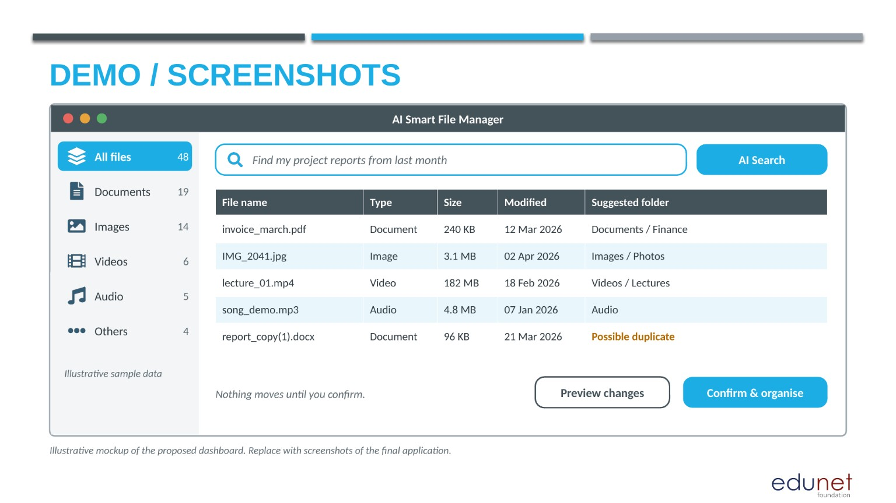

2026–27 · CURRENT
CURRENT TRAINING
Craft Instructor Training Scheme (CITS)
National Skill Training Institute (NSTI), Kanpur
Trade: Information Technology
CITS Trainee · Information Technology
I am pursuing CITS in Information Technology at NSTI Kanpur, with an interest in web development, AI tools, and practical computer troubleshooting.
01 / ABOUT
I’m an IT learner focused on developing practical skills and understanding how technology can solve everyday problems.
Currently, I am pursuing the Craft Instructor Training Scheme (CITS) in Information Technology at National Skill Training Institute (NSTI), Kanpur. My learning interests include full stack web development, AI tools and prompt engineering, software installation, and troubleshooting. I enjoy exploring new tools and turning what I learn into useful projects.
02 / EDUCATION
National Skill Training Institute (NSTI), Kanpur
Trade: Information Technology
Chhattisgarh Institute of Technology (CGIT), Jagdalpur
Passing year: 2026
Government Polytechnic, Jashpur
Pratap Boy's Higher Secondary School, Gholeng
03 / SKILLS
A growing toolkit across IT, development, productivity, and collaboration.
04 / SELECTED WORK

PROJECT / 01A smart file-management application concept that scans a user-selected folder, organises files into categories, supports natural-language search, and suggests suitable folders, clearer file names, and possible duplicates.
The dashboard image is an illustrative mockup using sample data. File moves and renames require user preview and confirmation; important files are never deleted automatically.
05 / TRAINING
National Skill Training Institute (NSTI), Kanpur · Session 2026–27
Currently developing IT knowledge and practical skills through the CITS training programme.
06 / CERTIFICATION
07 / CONTACT
Have a question, an opportunity, or an interesting project idea? Feel free to reach out.